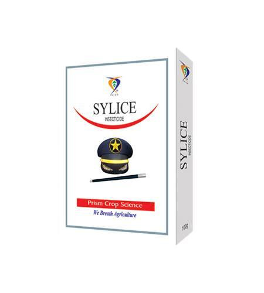

Technical Name: Fipronil 40% + Imidacloprid 40% WG
Major Crops: Sugarcane
Use / Benefits: Best suited for white grub (Holotrichea consanguinea) control in sugarcane. SYLICE combines two modes of chemistry for dual action against pests (systemic & ingestion/contact). It provides longer persistence, excellent control, promotes better root growth, greener plants, and higher yields.
Target Pest: Fipronil acts primarily as an ingestion toxicant with some contact action by interfering with nerve impulse transmission. Imidacloprid disrupts proper signal transmission in the nervous system, leading to excitation of nerve cells and ultimately pest death.
Dose / Hectare: 100 gm
Presentation Available: 40 gm, 100 gm
Company: Prism